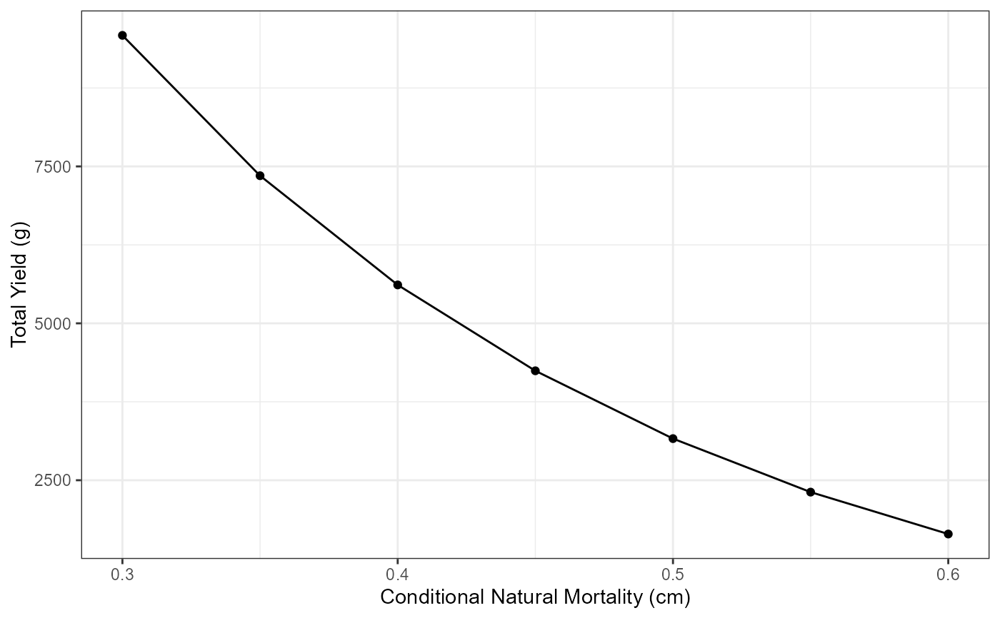
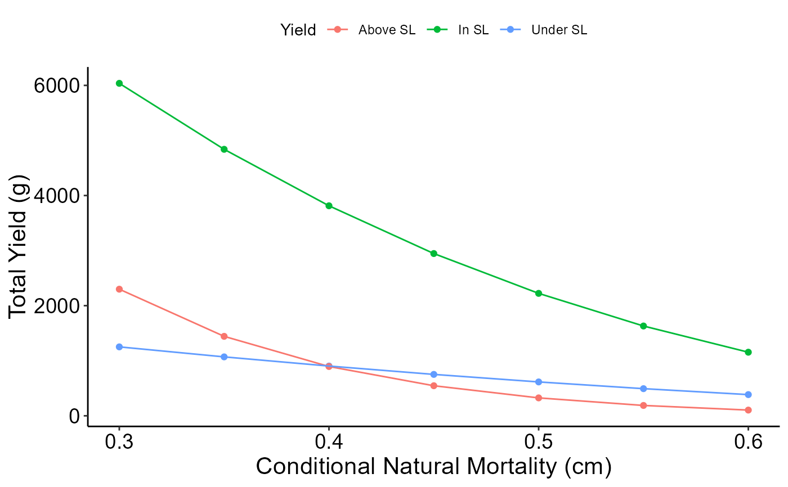

Main function to simulate expected yield using the Beverton-Holt Yield Per Recruit model for a slot limit
Source:R/yprBH_SlotLL.R
yprBH_SlotLL.R.RdMain wrapper function to estimate yield using the Beverton-Holt YPR model. This main function accepts a range of values for cf, cm, recruitment length, lower slot limit length, and upper slot limit length.
Usage
yprBH_SlotLL(
recruitmentTL,
lowerSL,
upperSL,
cfunder,
cfin,
cfabove,
cmmin,
cmmax,
cminc,
loi = NULL,
lhparms,
matchRicker = FALSE
)Arguments
- recruitmentTL
A numeric representing the minimum length limit for recruiting to the fishery in mm.
- lowerSL
A numeric representing the length of the lower slot limit in mm.
- upperSL
A numeric representing the length of the upper slot limit in mm.
- cfunder
Single value, conditional fishing mortality under the lower slot limit.
- cfin
Single value, conditional fishing mortality within the lower and upper slot limit.
- cfabove
Single value, conditional fishing mortality over the upper slot limit.
- cmmin
Single value, minimum conditional natural mortality
- cmmax
Single value, maximum conditional natural mortality
- cminc
Single value, increment to cycle from minimum to maximum conditional natural mortality
- loi
A numeric vector for lengths of interest. Used to determine number of fish that reach desired lengths.
- lhparms
A named vector or list that contains values for each
N0,tmax,Linf,K,t0,LWalpha, andLWbeta. SeemakeLHfor definitions of these life history parameters. Also see details.- matchRicker
A logical that indicates whether the yield function should match that in Ricker (). Defaults to
TRUE. The only reason to changed toFALSEis to try to match output from FAMS. See the "YPR_FAMSvRICKER" article.
Value
A data.frame with the following calculated values:
cm A numeric representing conditional natural mortality
TotalYield is the calculated total yield
TotalHarvest is the calculated total number of harvested fish
TotalNdie is the calculated total number of fish that die of natural death
yieldUnder is the calculated yield under the slot limit
yieldIn is the calculated yied within the slot limit
yieldAbove is the calculated yield above the slot limit
exploitationUnder is the exploitation rate under the slot limit
exploitationIn is the exploitation rate within the slot limit
exploitationAbove is the exploitation rate above the slot limit
NharvestUnder is the number of harvested fish under the slot limit
NharvestIn is the number of harvested fish within the slot limit
NharvestAbove is the number of harvested fish above the slot limit
NdieUnder is the number of fish that die of natural death under the slot limit
NdieIn is the number of fish that die of natural deaths within the slot limit
NdieAbove is the number of fish that die of natural deaths above the slot limit
avglenUnder is the average length of fish harvested under the slot limit
avglenIn is the average length of fish harvested within the slot limit
avglenAbove is the average length of fish harvested above the slot limit
avgwtUnder is the average weight of fish harvested under the slot limit
avgwtIn is the average weight of fish harvested within the slot limit
avgwtAbove is the average weight of fish harvested above the slot limit
trUnder is the time for a fish to recruit to a minimum length limit (i.e., time to enter fishery)
trIn is the time for a fish to recruit to a lower length limit of the slot limit
trOver is the time for a fish to recruit to a upper length limit of the slot limit
NrUnder is the number of fish at time trUnder (time they become harvestable size under the slot limit)
NrIn is the number of fish at time trIn (time they reach the lower slot limit size)
NrAbove is the number of fish at time trAbove (time they reach the upper slot limit size)
N at xxx mmis the number that reach the length of interest supplied. There will be one column for each length of interest.FUnder is the estimated instantaneous rate of fishing mortality under the slot limit
FIn is the estimated instantaneous rate of fishing mortality within the slot limit
FAbove is the estimated instantaneous rate of fishing mortality above the slot limit
MUnder is the estimated instantaneous rate of natural mortality under the slot limit
MIn is the estimated instantaneous rate of natural mortality within the slot limit
MAbove is the estimated instantaneous rate of natural mortality above the slot limit
ZUnder is the estimated instantaneous rate of total mortality under the slot limit
ZIn is the estimated instantaneous rate of total mortality within the slot limit
ZAbove is the estimated instantaneous rate of total mortality above the slot limit
SUnder is the estimated total survival under the slot limit
SIn is the estimated total survival within the slot limit
SAbove is the estimated total survival above the slot limit
cfUnder A numeric representing conditional fishing mortality
cfIn A numeric representing conditional fishing mortality
cfOver A numeric representing conditional fishing mortality
recruitmentTL A numeric representing the minimum length limit for recruiting to the fishery in mm.
lowerSL A numeric representing the length of the lower slot limit in mm.
upperSL A numeric representing the length of the upper slot limit in mm.
N0 A numeric representing the initial number of new recruits entering the fishery OR a vector or list that contains named values for each
N0,Linf,K,t0,LWalpha,LWbeta, andtmaxLinf A numeric representing the point estimate of the asymptotic mean length (L-infinity) from the von Bertalanffy growth model in mm
K A numeric representing the point estimate of the Brody growth coefficient from the von Bertalanffy growth model
t0 A numeric representing the point estimate of the x-intercept (i.e., theoretical age at a mean length of 0) from the von Bertalanffy growth model
LWalpha A numeric representing the point estimate of alpha from the length-weight regression on the log10 scale.
LWbeta A numeric representing the point estimate of beta from the length-weight regression on the log10 scale.
tmax An integer representing maximum age in the population in years
See also
this demonstration page for more plotting examples
#'See this demonstration page for more plotting examples
Author
Jason C. Doll, jason.doll@fmarion.edu
Examples
#Load other required packages for organizing output and plotting
library(ggplot2) #for plotting
library(dplyr) #for select
library(tidyr) #for pivot_longer
# Life history parameters to be used below
LH <- makeLH(N0=100,tmax=15,Linf=592,K=0.20,t0=-0.3,LWalpha=-5.528,LWbeta=3.273)
#Estimate yield
Res_1 <- yprBH_SlotLL(recruitmentTL=200,lowerSL=250,upperSL=325,
cfunder=0.25,cfin=0.6,cfabove=0.15,cmmin=0.3,cmmax=0.6,cminc=0.05,
loi=c(200,250,300,325,350),lhparms=LH)
Res_1
#> TotalYield TotalNharv TotalNdie yieldUnder yieldIn yieldAbove uUnder
#> 1 9587.852 30.319080 23.01694 1251.5389 6037.309 2299.0040 0.2120703
#> 2 7351.774 24.574297 22.24638 1069.8047 4839.183 1442.7858 0.2052112
#> 3 5611.796 19.682869 20.98520 903.2554 3813.586 894.9547 0.1981511
#> 4 4243.747 15.534616 19.35642 751.6909 2946.258 545.7979 0.1908634
#> 5 3163.191 12.040623 17.45903 614.9004 2223.163 325.1268 0.1833156
#> 6 2310.783 9.126475 15.37708 492.6607 1630.491 187.6315 0.1754660
#> 7 1643.192 6.727817 13.18526 384.7347 1154.658 103.7991 0.1672608
#> uIn uAbove NharvestUnder NharvestIn NharvestAbove N0die
#> 1 0.5182617 0.12677377 8.473698 19.625646 2.2197362 46.64404
#> 2 0.5033542 0.12258047 7.265359 15.827897 1.4810405 53.17276
#> 3 0.4879637 0.11826676 6.154504 12.555729 0.9726349 59.32995
#> 4 0.4720254 0.11381687 5.140149 9.769016 0.6254505 65.10843
#> 5 0.4554588 0.10921127 4.221259 7.428002 0.3913628 70.50022
#> 6 0.4381614 0.10442524 3.396745 5.493290 0.2364398 75.49642
#> 7 0.4200000 0.09942671 2.665456 3.925836 0.1365243 80.08692
#> NdieUnder NdieIn NdieAbove avglenUnder avglenIn avglenAbove avgwtUnder
#> 1 10.505888 7.639471 4.8715819 224.7908 281.2776 407.5833 147.6969
#> 2 10.879345 7.441293 3.9257394 224.5816 280.7497 400.0261 147.2473
#> 3 10.928309 6.999731 3.0571627 224.3558 280.1859 393.1118 146.7633
#> 4 10.681831 6.373828 2.3007624 224.1106 279.5811 386.7988 146.2391
#> 5 10.170789 5.619066 1.6691717 223.8426 278.9287 381.0284 145.6675
#> 6 9.428210 4.787165 1.1617049 223.5471 278.2205 375.7343 145.0391
#> 7 8.489694 3.925836 0.7697317 223.2179 277.4456 370.8494 144.3410
#> avgwtIn avgwtAbove trUnder trIn trOver NrUnder NrIn NrAbove
#> 1 307.6235 1035.7105 1.761224 2.443479 3.68129 53.35596 34.376376 7.1112601
#> 2 305.7376 974.1704 1.761224 2.443479 3.68129 46.82724 28.682532 5.4133413
#> 3 303.7327 920.1343 1.761224 2.443479 3.68129 40.67005 23.587233 4.0317725
#> 4 301.5921 872.6477 1.761224 2.443479 3.68129 34.89157 19.069593 2.9267483
#> 5 299.2950 830.7556 1.761224 2.443479 3.68129 29.49978 15.107731 2.0606627
#> 6 296.8149 793.5699 1.761224 2.443479 3.68129 24.50358 11.678626 1.3981711
#> 7 294.1178 760.2978 1.761224 2.443479 3.68129 19.91308 8.757933 0.9062605
#> N at 200 mm N at 250 mm N at 300 mm N at 325 mm N at 350 mm cm FUnder
#> 1 53.35596 34.376376 12.570645 7.1112601 5.5094637 0.30 0.2876821
#> 2 46.82724 28.682532 9.891904 5.4133413 4.0439674 0.35 0.2876821
#> 3 40.67005 23.587233 7.636027 4.0317725 2.8956814 0.40 0.2876821
#> 4 34.89157 19.069593 5.763259 2.9267483 2.0140256 0.45 0.2876821
#> 5 29.49978 15.107731 4.234615 2.0606627 1.3531307 0.50 0.2876821
#> 6 24.50358 11.678626 3.011931 1.3981711 0.8717679 0.55 0.2876821
#> 7 19.91308 8.757933 2.057926 0.9062605 0.5332727 0.60 0.2876821
#> FIn FAbove MUnder MIn MAbove ZUnder ZIn
#> 1 0.9162907 0.1625189 0.3566749 0.3566749 0.3566749 0.6443570 1.272966
#> 2 0.9162907 0.1625189 0.4307829 0.4307829 0.4307829 0.7184650 1.347074
#> 3 0.9162907 0.1625189 0.5108256 0.5108256 0.5108256 0.7985077 1.427116
#> 4 0.9162907 0.1625189 0.5978370 0.5978370 0.5978370 0.8855191 1.514128
#> 5 0.9162907 0.1625189 0.6931472 0.6931472 0.6931472 0.9808293 1.609438
#> 6 0.9162907 0.1625189 0.7985077 0.7985077 0.7985077 1.0861898 1.714798
#> 7 0.9162907 0.1625189 0.9162907 0.9162907 0.9162907 1.2039728 1.832581
#> ZAbove SUnder SIn SAbove cfUnder cfIn cfOver recruitmentTL lowerSL
#> 1 0.5191939 0.5250 0.28 0.5950 0.25 0.6 0.15 200 250
#> 2 0.5933018 0.4875 0.26 0.5525 0.25 0.6 0.15 200 250
#> 3 0.6733446 0.4500 0.24 0.5100 0.25 0.6 0.15 200 250
#> 4 0.7603559 0.4125 0.22 0.4675 0.25 0.6 0.15 200 250
#> 5 0.8556661 0.3750 0.20 0.4250 0.25 0.6 0.15 200 250
#> 6 0.9610266 0.3375 0.18 0.3825 0.25 0.6 0.15 200 250
#> 7 1.0788097 0.3000 0.16 0.3400 0.25 0.6 0.15 200 250
#> upperSL N0 Linf K t0 LWalpha LWbeta tmax
#> 1 325 100 592 0.2 -0.3 -5.528 3.273 15
#> 2 325 100 592 0.2 -0.3 -5.528 3.273 15
#> 3 325 100 592 0.2 -0.3 -5.528 3.273 15
#> 4 325 100 592 0.2 -0.3 -5.528 3.273 15
#> 5 325 100 592 0.2 -0.3 -5.528 3.273 15
#> 6 325 100 592 0.2 -0.3 -5.528 3.273 15
#> 7 325 100 592 0.2 -0.3 -5.528 3.273 15
# Plot results
# Total Yield vs Conditional Natural Mortality (cm)
ggplot(data=Res_1,mapping=aes(x=cm,y=TotalYield)) +
geom_point() +
geom_line() +
labs(y="Total Yield (g)",x="Conditional Natural Mortality (cm)") +
theme_bw()

# Yield under, in, and above the slot limit vs Conditional Natural Mortality (cm)
# Select columns for plotting
plot_data <- Res_1 |>
select(cm, yieldUnder, yieldIn, yieldAbove) |>
pivot_longer(!cm, names_to="YieldCat",values_to="Yield")
# Generate plot
ggplot(data=plot_data,mapping=aes(x=cm,y=Yield,group=YieldCat,color=YieldCat)) +
geom_point() +
scale_color_discrete(name="Yield",labels=c("Above SL","In SL","Under SL"))+
geom_line() +
labs(y="Total Yield (g)",x="Conditional Natural Mortality (cm)") +
theme_bw() +
theme(legend.position = "top")+
guides(color=guide_legend(title="Yield"))
